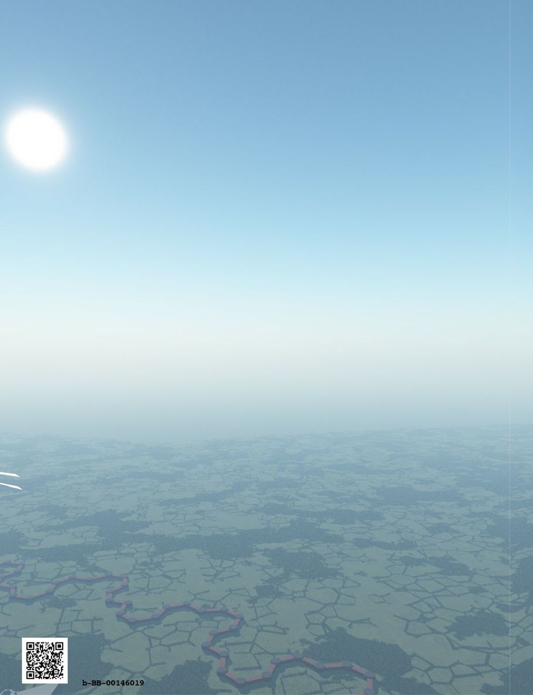

| ファンタジー世界構築のための質問リスト③: 社会組織編 (RasenWorks) | |
| 神楽坂らせん | |
| RasenWorks (2016) | |
Patricia C. Wredeによる"Fantasy Worldbuilding Questions" http://www.sfwa.org/tag/world-building/ の日本語訳です。
月刊群雛2014年08月号～2015年02月号まで全５回連載された「異世界構築質問リスト」をまとめました。
───────────────────────
はじめに
この質問リストは、自らの創作物語のために、現実感あふれる架空の世界観を構築しようという、ファンタジー作家の試みを支援するものです。
数多くの質問リストの中から、今回は「社会組織」に関する質問をピックアップしました。
原文では、いくつかの質問が複数の項目に併記されています。この和訳版の質問リストでは可読性を重視し、本項での初出の質問のみ残しました。重複する質問については初出の参照先を明記してありますので、そちらをご覧ください。その他、この原稿に掲載できなかった質問については、『月刊群雛』やシリーズ別巻、または『ファンタジー世界構築のための質問リスト〈完全版〉』をご参照ください。
これらの質問の多くは、ある物語にとっては参考になったり不可欠であったりしますが、すべての物語の条件・状況に適合できるほど万能なものではありません。小説を書き始める（もしくは書き終える）ために必要な全ての、あるいはいくつかの質問に、作家が必ず答えなければならないというものでもありません。
矛盾のない......あるいは、つじつまが合わない世界観と背景とは、どのようなものなのかと、作家に考えていただこうという発想から、この質問リストをご用意いたしました。お役に立ちそうならば、どうぞご活用ください。そうでなければ、そっと閉じてください。
この質問リストは、網羅的なものでも最終的なものでもありません。しかし、作家一人ひとりが個々の架空世界についてリストをまとめようとする場合の、きっかけにはなるでしょう。
【異世界構築質問リスト】
●社会組織
［Ａ 一般］
（１）どこで科学や魔法の研究が行われていますか？ 大学、民間の研究室？ 統治者／政府等の支援のもとでですか？ → 魔法と魔術師Ｄ（10）へ
（２）魔術師になるには免許が必要ですか？ そうだとすれば、それは運転免許証（私たちの文化の中で、ほぼ全員がある年代の到来時に取得）のようなものですか？ または医師免許のようなもの？ （人口のわずかな割合のものが取得） 誰が魔法免許を認定しますか？ （政府、魔術師ギルド／ＡＭＡ〔訳注：アカデミー・オブ・マジカル・アーツ〕、現地の聖職者等） → 魔法と魔術師Ｂ（11）へ
（３）上流階級／貴族のための様々なランク・タイトルと適切な呼びかけ方は、どういったものでしょうか？ 誰でも「閣下（My Lord）」と「御前（My Lady）」と呼ばれますか？ または、より多くの区別、猊下（Your Grace）、殿下（Your Highness）、陛下（Your Majesty）、教皇（Your Holiness）等がありますか？
（４）どのような職業が尊敬されていますか？ どのような職業が見下されていますか？ それらはどうしてですか？
（５）百姓、ブルジョア、戦士、貴族など、どのくらい多くの階層がこの社会にありますか？ 社会階層が上下することはどれくらい難しいですか？ 社会階層の間の境界は強固でしょうか？ 貴族が取引に従事したり、戦士が収穫を手伝うことは、みっともないと思われていませんか？
（６）社会的階層が上下することについて、そうした社会的流動性はどれくらいありますか？ これについて人々はどう考えていますか？
社会的階層の移動は人々にとって簡単ですか？ それとも、困難ですか？
中流階級に向かって躍進しようとする農夫、あるいは上流階級や高貴な人が中流階級になるなどの時、どんな抵抗があるでしょうか？ そのような人は社会的に認められるでしょうか？
（７）人々の美の基準は何でしょうか？ 絵画や彫刻？ 洋服や家具？ 彼らはあなたの文化の中での基準とはどのように異なりますか？ 例えば、肥満がとても望ましく美しい形質と考える国など。どのような美しさの基準が、様々な人種の身体的特徴に反映されていますか？ （例：ドワーフは、背が低いほど魅力的と思うかもしれない。狼は長い歯または特定の香りに惹かれる等） → 人々と風習Ｈ（15）へ
［Ｂ 政府］
（１）魔法と魔術師の存在は、どのように法律と政府に影響を及ぼしましたか？ 魔法（使い）は、政府の仕事や特定の種類のオフィスで禁じられていますか？ （訳注：飲酒のようなもの？） いくつかの政府の仕事や、特定の仕事では、ウィザードであることを必要としますか？ （訳注：魔法警察等） → 魔法と魔術師Ｂ（14）へ
（２）政府の基本的なスタイルは何ですか？ 封建貴族、寡頭制、絶対不変の統治者、民主主義、その他？ どのような形態が近隣諸国で使用されていますか？ なぜ彼らは同じまたは異なっているのでしょうか？
（３）政府や国家元首は、どんなサービスを提供しますか？ 学校、井戸、法廷、人々をバイキングから保護する軍など？ 政府レベルではなく、個人レベルや地元レベルではどのようなサービスがあるでしょうか？
（４）誰が税金を徴収する権利を有しますか？ 何のために？ 誰のために？ 税金は、現物で支払うことができますか、あるいはお金を必要とする特定の何かで支払うのでしょうか？
（５）誰が国家元首のサポートサービスを提供していますか？ 彼らは何と呼ばれていますか？ 王のカウンセラー、閣僚、国務長官、信頼のおける賢女？ 彼らはどう選出されていますか？ 遺伝・世襲で？ 公務員として？ 任命？ 軍隊からの選出？
（６）国や支配者の相対的な力や通常の軍隊の大きさは、彼らの持つウィザード数と能力、あるいは彼らの自由に使えるお金の量によって測られていますか？ → 魔法と魔術師Ｂ（19）へ
（７）市民とみなされている者はどのような権利と権限を持つでしょうか？ （投票、泥棒からの保護、ローマの審問を受ける権利等） どのような責任がそれらに付随しますか？ （陪審義務、主の軍隊のための資金や騎士を提供する等） → 人々と風習Ｈ（８）へ
（８）魔術師、外国人、子供、農民、女性等が、完全な市民より法的権利が少ないクラスとみなされていますか？ それはなぜですか？ 彼らは、精神的または道徳的に欠損していると考えられていますか？ 彼らは国に脅威や負担を与えるからですか？ または他に根拠があるのでしょうか？ → 人々と風習Ｈ（９）へ
（９）地位を向上させるには、どうすることが最も簡単、または最も一般的な方法でしょうか？ より多くのお金をためて、良い結婚をして、統治者の目にとまることですか？ すでに高い社会的地位を持つ者からそれへの抵抗がありますか？ それはどれくらいの強さの抵抗ですか？
（10）現在の国家のヘッドがいなくなった場合、誰が政府の実権を引き継ぐのでしょうか？ これはどのように決定されますか？ 実際の、または政治的のいずれかの後継者はいますか？ 相続人が未成年である場合はどうなりますか？ 誰が引き継ぎの命令を与えますか？
（11）国家元首は誰によって保護されるのでしょうか？ 彼の個人的なガード、シークレットサービス、正規軍と提携したエリート集団？ 彼らセーフガードは、特殊な能力（暗殺者、毒、直接攻撃、魔法攻撃など）を持っていますか？
（12）軍隊に、収税吏に、使用人に、そして通りの普通の人々に命令する権利は誰が持ちますか？ どのように、そのような人々は選ばれますか？
（13）誰が造幣を担当しますか？ 統治者、地元の男爵、貿易ギルドなど？ 一般に許容できる標準（訳注：貨幣と捉えられる基準のこと？ それとも基準通貨のことか？）がありますか？ 偽造は、どれくらい簡単で一般的ですか？
（14）教育の組織化されたシステムはありますか？ もしあるなら、誰がそれを提供していますか？ 政府、教会、民間人？ それはどのようにサポートされていますか？ 魔法は、一般的な大学のカリキュラムの一部と考えられていますか？ それとも、個人的にそれを勉強しなければならないのですか？
（15）誰が軍隊のために人々を徴兵できますか？ どのようにして？ 統治者はその者が貴族であることを要求しますか？ それとも統治者自身が徴兵を行いますか？
（16）スパイ活動と情報収集は通常どれだけ形式的に政府によって行われますか？ 外交官やフリーのエージェントまたは軍人によってでしょうか？ 商人ギルドや裕福な商人などはスパイ活動を行いますか？ また、スパイ行為のための実際の組織が存在しますか？ それは現在、どのくらい有効でしょうか？
（17）国々の関係は、主として国家元首同士の関係に依存するでしょうか？ 両国の支配者は単にお互いの心根がきらいなだけで、宣戦布告することができずにいますか？ それとも、彼らは感情で国々を戦争に引き込むことができるのでしょうか？
（18）四旬節やラマダン中、支配者の死後、子供の出生後、冬至の前など、人々が断食するか、ごちそうを食べることになっている時期がありますか？ 例えば、ローマでの拳闘士による戦いなどのように、統治者が楽しむために人々が祝賀やフェスティバルを提供することになっている大きなイベントがありますか？
［Ｃ 政治］
（１）魔法は職業ですか？ 芸術ですか？ この社会で魔術師に与えられている地位は何でしょうか？ 魔術は明白に禁じられた政治的な行動ですか、または、魔術師とそのギルドは法廷陰謀にどっぷり浸かっていますか？
（２）魔術師に政治力がありますか？ それとも彼らはそれを超越していますか？ 魔法／魔術師を中心にした国政の展開はありますか？ （つまり、正規軍隊や魔術師ライセンス供与者等に起用しようとしている、特定の魔法の禁止・保護や特定魔法を促進しようとしている等） 魔術師はロビー組織を持っていますか？ それとも単一の存在？ → 魔法と魔術師Ｂ（10）へ
（３）緊張、対立等、神々の間にあからさまな敵意はありますか？ これはどのように教会の政治に影響しますか？ 人々の日常生活にはどうでしょうか？ → 人々と風習Ｉ（７）へ
（４）技術進歩のレベルは、社会的、政治的発展のレベルと一致していますか？
（５）国や支配者の相対的な力は、通常、保有する軍隊の規模、保有ウィザードの数と能力、あるいはお金や貿易量によって測られていますか？
（６）地位を向上させるには、どうすることが最も簡単、または最も一般的な方法でしょうか？ より多くのお金をためて、良い結婚をして、統治者の目にとまることですか？ すでに高い社会的地位を持つ者からそれへの抵抗がありますか？ それはどれくらいの強さの抵抗ですか？ → 社会組織Ｂ（９）へ
（７）現在、主要な政治派閥は何ですか？ どのくらい前から彼らは存在していますか？ 派閥の同盟者と、その敵は誰ですか？ 政治の舞台で新たな潜在的な力は現われてきていますか？ （例えば、中産階級の勃興、大学で新魔法の発見。予期しないパワー等） → 魔法と魔術師Ｄ（12）へ
（８）今日、たった今、国の、それぞれのレベルでの論争の政治的問題は何ですか？ これらの問題にどのようなポジションが、保守的である、またはリベラルであると考えられていますか？ それとも、問題に関して無関心ですか？
（９）商人、魔術師グループ、様々な宗教のような「特別利益団体」"Special Interest Groups（ＳＩＧ）"には、法廷政治上でどれくらいの影響がありますか？ どのように、彼らは影響を働かせますか？ 彼らに味方をする貴族や評議員と話すこと等の間接的な方法で？ それとも、直接、理事会に自らの代表者を送り込んだり、賄賂や強制的な方法ででしょうか？
（10）異種族グループ間に不安定な政治同盟はありますか？ なぜそれは作られましたか？ 彼らの関係が壊れたとき、どのような影響が現われますか？
（11）古代の競争や憎悪が、現在の政治的な態度やポジションに影響を及ぼしますか？ （例：スコットランドとウェールズの分離独立グループ、イスラム教徒対プロテスタント対カトリック教徒、ドワーフ対エルフ、マッコイ対ハットフィールド）
（12）ドワーフ、狼男、商人、女性、葬儀屋などの偏見に直面する可能性が高い人々について、彼らに対する偏見は主に法的な問題ですか？ または、大部分の一般人の態度や感情の問題ですか？ 支配者は、この偏見に逆らって最高評議や国防長官としてドワーフを任命し、働かせるのに十分な力を持っていますか？
（13）現在の国家のヘッドがいなくなった場合、誰が政府の実権を引き継ぐのでしょうか？ これはどのように決定されますか？ 実際の、または政治的のいずれかの後継者はいますか？ 相続人が未成年である場合はどうなりますか？ 誰が引き継ぎの命令を与えますか？ → 社会組織Ｂ（10）へ
（14）政府や政治に対する大きな影響があるものの、公式的な立場を保持しない人々がいますか？ 彼らは誰ですか？ なぜ、彼らには影響力がありますか？ これは、通常の正しいことでしょうか、それとも悪いことと考えられていますか？
［Ｄ 犯罪と法制度］
（１）魔法と魔術師の存在は、どのように法律と政府に影響を及ぼしましたか？ 魔術師は、ある種の政府の仕事や行政機関から締め出されていますか？ 政府のいくばくかの仕事（訳注：魔法警察等）では、魔術師の資格が必要とされますか？ → 魔法と魔術師Ｂ（14）へ
（２）どのような証拠を収集することが、罪を決定する通常の法的な方法と考えられていますか？ 拷問は許されていますか？ 領主や地主による任意の判断は許されますか、または、正義の独立したスタンダードがありますか？
（３）個人的な武器はそれらを買う余裕のある誰もが利用できますか？ 所持は風習や法律によって「貴族だけのために」等と考えられていますか？ 特定のクラスの武装を禁止する法律はありますか？ 逆に、特定の武器技術を学ぶことを特定のクラスに要求している法律がありますか？ （参考：数世紀の間イングランドでは長弓に熟達していることを独立自営農民に要求していた） → 人々と風習Ｂ（８）へ
（４）法医学魔法は可能ですか？ 一般的に使用されていますか？ それとも犯罪の特定だけのために使用されますか？ もしそうなら、どうやって？ 証拠として法廷で法医学呪文の結果は使えるのでしょうか？ これは、任意のウィザードが行うことができるものですか、その方面に特化した者でなければなりませんか？ → 魔法と魔術師Ｄ（17）へ
（５）特定の呪文は違法ですか？ それはなぜでしょうか？ 呪文の効果による違法性、または魔法の元となる成分または手続きに必要な違法なモノ等が違法？ もしそうなら、どのように犯罪を行う魔術師が探しだされ、逮捕や罰を与えられますか？ 魔術師のギルド、または通常の裁判所や法的機関がそれを処理しなければならないでしょうか？ → 魔法と魔術師Ｂ（27）へ
（６）個別の民事・刑事裁判所がありますか？ ヒト以外の裁判所は？ 魔法の犯罪のための別々の裁判所や手順がありますか？ 魔法知識が必要な（または禁じられている）裁判官や職員等がいますか？ 法廷で魔法の証拠が使われることがありますか？ 物的証拠や目撃証言よりも魔法での証拠は信頼性の低いものと考えられていますか？ → 魔法と魔術師Ｄ（18）へ
（７）どんなものが、本当に重い犯罪と考えられますか？ 例えば、貨幣取引が重要な文化において、偽造は死刑犯罪であるかもしれません。生命が安い場所であるなら、殺人は安い罰金を払う程度の犯罪であるかもしれません。
（８）重い罪とマイナーな犯罪に対する通常の処罰はどのように違いますか？ 刑務所があり、人々は処罰され解放されますか？ 罰の程度や罪標（訳注：入れ墨のようなもの？）の程度がありますか？ 耳を切断／断頭／手を切断など。または、全てが絞首刑に処されるでしょうか？
（９）誰が、犯罪者を捕える役割を果たしますか？ 誰が彼らに賃金を支払うのでしょうか？ 統治者、市政府、商人のコンソーシアム、それとも他の誰か？ どのように、彼らは組織されますか？ 独立した警察指定地区に、または、地区ごとに、それとも彼らを雇いたいと望んでいる者に応じて？ 彼らはフルタイム、パートタイム、あるいはボランティアですか？ 公的な存在ですか？ それとも私的な存在？ 彼らはどんな施設を持っていますか？ どのような武器を持つことを許可されているでしょうか？
（10）弁護士か擁護団体はありますか？ どういった人々が彼らを使う余裕がありますか？ 誰が彼らを訓練し、資格を保証しますか？
（11）無罪であると証明されるまで、人々は有罪ですか、それとも、有罪であると証明されるまで無罪なのでしょうか？ また、それらの証明が君主の前で行われる場合、善悪の判断は君主の気分に依存しますか？
（12）統治者か、支配者か地主以外の裁判官がいますか？ もしいるならば、どのように彼らは選ばれますか、どのように彼らに報酬が支払われますか？ 一般人が訴えを起こすことは可能ですか、もしそうならば、誰に？ 裁判官に会えなそうな遠くの地域は、どれくらいありますか？ 「群衆正義」（訳注：暴徒の暴力による正義）は一般的？ それともまれですか？ それは認められる？ それとも許されない行為ですか？
（13）異なるクラスや種族の着るものを定めていたり贅沢禁止の法律がありますか？ 裁判官と弁護士は、彼らの職業を示すために、特別な服（ローブ、かつら）を着ますか？
（14）魔術師は、法のもとで市民として完全な権利を持っていますか？ 持っていないですか？ 彼らは他人の権利にかかわることなく、好きなように、魔法行為を行うことができますか？ → 魔法と魔術師Ｂ（18）へ
（15）泥棒、追いはぎや強盗、海賊は、一般的ですか、それとも珍しいですか？ 平均的な市民が生涯の間に実行する可能性が高い犯罪はどれだけありますか？
（16）法律を作ったり撤廃することは誰ができますか？ 選ばれた上院、任命された委員会あるいは遺伝的な上院グループですか？ あるいは統治者か、国家元首だけ？ 貴族、中流階級商人等は、作られる法律にどれほど影響を及ぼすことができますか？
（17）嫌疑のかかっている容疑者は、彼らの裁判の前後にどのように扱われますか？ 警察・軍隊・都市警備者は、容疑者を手荒く扱いますか？ それとも、そうした行為は社会から顰蹙を買いますか？
［Ｅ 外交］
（１）この国は、他の国との正式な関係を持っていますか？ そうならば、誰が大使になるのですか？ 大使館および領事館がありますか？ それとも、何かが起きた場合に限り、特使が派遣されますか？
（２）条約はどのように整えられますか？ 重要な人が、有効な署名をするためにやって来てサインをして条約成立になるのでしょうか？ （訳注：条約の不成立はどのように扱われる？）
（３）他の国々に対する公式の姿勢はどれほど通商と貿易に影響しますか？ 商人は、利益を得ることができる限り政府の間の緊迫した対立を無視しますか？ それとも、重要な問題として影響を受けるでしょうか？ 国境検問所に税関検査官または同等の者がいますか？ いくつかの技術・魔法・商品の輸出入は、政府、あるいは民間のカルテルによって規制されますか？ これは、国々の政治的な関係にどのように影響しますか？
（４）スパイ活動と情報収集は通常どれだけ形式的に政府によって行われますか？ 外交官やフリーのエージェントまたは軍人によってでしょうか？ 商人ギルドや裕福な商人などはスパイ活動を行いますか？ また、スパイ行為のための実際の組織が存在しますか？ それは現在、どのくらい有効でしょうか？ → 社会組織Ｂ（16）へ
（５）伝統的な同盟国は、どの国・種族ですか？ 伝統的なライバルは、どこですか？ どのように、こうした伝統は、国と種族の現代の関係に影響を及ぼしていますか？
（６）国家元首の血縁や結婚によって関係している国・地域はありますか？ そして、それが外交政策を決定する際にどの程度重要になるのでしょうか？
［Ｆ 行われている戦争］
（１）どの民族／国／人種は、最近対立しましたか？ それはなぜ？ いつ？ 最近の戦争はどんな様子でしたか？ 誰が勝ちましたか？ → 物理的および歴史的特徴Ｄ（７）へ
（２）戦争の主要な武器は何を利用できますか？ 攻城塔、カタパルト、大砲、原子爆弾等。
（３）一般的にどれだけ魔法の影響を受けた戦略および戦術がありますか？ 軍司令官は、様々な魔法の攻撃に対処するために特別な戦略あるいは技術を持っていますか？ 様々なレベルの技術や魔法は、どのように戦術の一部として使用することができますか？ （例：敵大砲が泥の中では行動が難しいので、魔術師に雨を降らさせる等）
（４）どれくらいの者が一般的な魔法を使った戦い（戦略・戦術）の手段を持っていますか？ 魔法は戦いに向かないタイプの主に情報収集的な（透明化の呪文、水晶占い等）魔法ですか？ または戦場で有用な攻撃系の呪文（直接魔法攻撃や攻撃的悪魔を召喚等）がありますか？ 戦場での魔法使用が可能な場合、どのようにそれから防御できますか？ → 魔法と魔術師Ｄ（14）へ
（５）軍隊は通常、どのように組織化されていますか？ 正式な、独立した命令構造が存在しますか？ または、統治者は必要時に軍を組織し兵士を募集するのでしょうか。正式な軍隊構造があるならば、使われる階級や称号はどのようなものでしょうか。
（６）武器の使用は、社会階級によって制限されていますか？ 剣と甲冑を使用することを認められている騎士、弓と杖を使用できる自作農民、大鎌、ハンマー等だけを許された農夫、等。それらの制限は法や慣習的なものでしょうか、生物学的に武器のタイプによっては異なる種族では使用できないものがあるでしょうか？ （例えばエルフは冷たい鉄で作られている武器を用いることができない等）
（７）戦場委任やナイト爵位の譲位は戦時に可能ですか、または、そのような昇進は正式式典を待たなければなりませんか？ 通常の社会的な地位等の制限は、戦争状態においても平時と同様ですか、または、誰でも戦場では平等ですか？
（８）誰が軍隊のために人々を徴兵できますか？ どのようにして？ 統治者はその者が貴族であることを要求しますか？ それとも統治者自身が徴兵を行いますか？ → 社会組織Ｂ（15）へ
（９）プロの兵士・傭兵がいますか？ 軍隊でのキャリアは有効でしょうか？ または、生計を立てるために傭兵か剣売り等になるのでしょうか？ 軍は、ボランティアか被徴募者だけを受け入れますか？ あなたは勇気と戦功を示すことによって軍上層部まで昇進することができますか？ または、上層部役員は特定の人、すなわちお金で委任を買った人や軍隊組織の私立学校を卒業した人、有名な戦士の息子等のためにだけ予約されていますか？
（10）典型的な軍は、どれくらいの大きさですか？ 騎士、プロの兵士、警備員、傭兵等の兵士はどの程度のパーセンテージで訓練されており、訓練されていない新人はどのぐらいのパーセンテージでしょうか？ 新兵はまずトレーニングをされますか、それとも、彼らは仕事（すなわち、戦いにおいて）で直接学ぶことになっていますか？
（11）どのように、軍隊の必要品（訳注：兵糧等）は供給されますか？ 兵士は農民の世話になっても良いことになっていますか？ または、農民に食料を奪うことへの代償・対価を支払いますか？ 補給部隊が失われるか、捕えられてしまった場合、どうなりますか？ どのように、必需品は長い作戦行動の間に取り扱われますか？ 軍は彼ら自身とどれだけ多くの日数分の物資を一緒に運ぶことができますか？ （参照：アレキサンダー大王、マケドニア軍のロジスティクス。馬がどれだけ運ぶことができるか、そして馬の餌量がどのくらいあるかを計算して補給線を決めた）
（12）戦争を起こす際の慣例はありますか？ 例えば、誰も収穫で忙しくないとき、冬の間だけ戦う。一般人との戦いはしない。特定の種類の武器だけは利用可能等。それらは、人種・種族間で意見は食い違いませんか？
（13）非人間（ドワーフ、吸血鬼等）の存在は、一般に戦略、戦術と戦いにどのように影響を及ぼしますか？ 軍が特定の種類の非ヒト軍と交戦する場合、特別な武器は必要とされますか？ 人類以外の兵士は、ヒトとの身体的相違をどのように利点にしているでしょうか？
（14）特定の武器に伝統的に優れた使い手が現れる特定の非人間種族はありますか？ 例えば、バトルアックスとドワーフ、弓とエルフ等。なぜ彼らはより強い力、より良い視力、より多くの手先の器用さを持っているのですか？
（15）国々の関係は、主として国家元首同士の関係に依存するでしょうか？ 両国の支配者は単にお互いの心根がきらいなだけで、宣戦布告することができずにいますか？ それとも、彼らは感情で国々を戦争に引き込むことができるのでしょうか？ → 社会組織Ｂ（17）へ
（16）長期の戦争が進行中ならば、国内はどのような影響を受けていますか？ 徴兵は選別されていますか？ 従来よりもより若い兵、または老いた兵も集められているでしょうか？ 人々は、ビジネスを管理する農夫、馬に蹄鉄をはかせている女性、弾丸を作っている子供たち等の、いままでとは違う非伝統的な役割へ入って行くことを強いられていますか？ これらの変更はどのように社会に影響しましたか？ 戦争が終わった時、それらは、どのように社会階級・氏族・性別の関係に影響するでしょうか？
（17）軍は統合されていますか？ すなわち、男性、女性、エルフ、ドワーフ、紫色のモンスター、森の精霊、すべて同じ軍として。これはどのように戦いの形成や戦略に影響しますか？ 特に特定の人種やグループ単位で分離されることはありますか？ もしそうであれば、それらのユニットは精鋭部隊や戦場で最も消耗する兵士であると考えられていますか？ こうした姿勢はどのように戦略に影響するでしょうか？
（18）一般に科学または魔法は、武器、戦術、戦略の分野での具体的な要請によって促進されましたか？ （訳注：例：戦争が科学を発展させた）
（19）自然の制限あるいは課された制限が、あるタイプの武器の開発か使用を不可能にしていますか？ 例えばこの世界の「物理法則」が火薬の燃焼を許さないので、筋肉を動力とする武器だけが使用できる等。
（20）テクノロジーが戦争の様相をどの程度変えましたか？ 大規模な部隊の動きは？ 内燃機関は使用可能？ 蒸気動力船はありますか？
［Ｇ 兵器］
（１）この国の兵器は、周辺都市や国のそれらとどの程度匹敵しますか？ パワーバランスを崩す最近の技術革新がありますか？ それとも、どの国もが多かれ少なかれ等しい状況でしょうか？
（２）魔法武器はありますか？ 戦争で使用することができますか？ どのような点で有利なのですか？ 呪文は白兵戦に有用ですか？ あるいは攻城兵器のように遠距離で利用できたり、効果が遅かったりしますか？ → 魔法と魔術師Ｃ（３）へ
（３）どのように魔法の存在が兵器技術に影響を与えていますか？ 魔法の武器をより効果的にすることはできますか？ あなたは敵の呪文に抵抗するために壁を作ったり、鎧や武器に特別なことをする必要がありますか？ → 魔法と魔術師Ｃ（４）へ
（４）どれくらいの者が一般的な魔法を使った戦い（戦略・戦術）の手段を持っていますか？ 魔法は戦いに向かないタイプの主に情報収集的な（透明化の呪文、水晶占い等）魔法ですか？ または戦場で有用な攻撃系の呪文（直接魔法攻撃や攻撃的悪魔を召喚等）がありますか？ 戦場での魔法使用が可能な場合、どのようにそれから防御できますか？ → 社会組織Ｆ（４）へ
（５）どのように魔法の存在が武器技術に影響を与えていますか？ たとえば非兵器型のオブジェクトを非常に致命的になるように武器としての能力を拡張したりすることができますか？ （死のフライパン等） それとも、こうした魔法はもともと武器である場合にのみ正しく機能するのでしょうか？ 通常のオブジェクトに魔法をかけることによって、そのオブジェクトや使用者の能力が最高に向上することはありますか？ このようなエンチャント（訳注：能力付加魔法）は一般的にどのように役に立つでしょうか？ → 魔法と魔術師Ｃ（５）へ
（６）個人的な武器はそれらを買う余裕のある誰もが利用できますか？ 所持は風習や法律によって「貴族だけのために」等と考えられていますか？ 特定のクラスの武装を禁止する法律はありますか？ 逆に、特定の武器技術を学ぶことを特定のクラスに要求している法律がありますか？ （参考：数世紀の間イングランドでは長弓に熟達していることを独立自営農民に要求していた） → 社会組織Ｄ（３）へ
（７）この世界の武器技術のレベルはどのくらいですか？ 銃がありますか？ そうであれば、どのように洗練されたものですか？ フリントロック式、火縄銃、ライフル、サブマシンガン、それともパルサー式光線銃？
（８）戦争の主要な武器は何を利用できますか？ 攻城塔、カタパルト、大砲、原子爆弾等。 → 社会組織Ｆ（２）へ
（９）どんな武器や防具が軍隊の基準装備でしょうか？ 傭兵の場合は？ 貴族の場合は？ 平均的な農民は、彼／彼女の家を守るためにどの程度武装しますか？
（10）武器（例えば剣やピストル）は、社会の一部または全部の階層のための服装の標準的な部分ですか？
（11）戦争を起こす際の慣例はありますか？ 例えば、誰も収穫で忙しくないとき、冬の間だけ戦う。一般人との戦いはしない。特定の種類の武器だけは利用可能等。それらは、人種・種族間で意見は食い違いませんか？ → 社会組織Ｆ（12）へ
初出一覧
月刊群雛２０１４年８月号「ファンタジー世界構築のための質問リスト １」に掲載
●ワールド：基本原則／パラレルワールドの地球／地球とはまったく違う異世界
●物理的および歴史的特徴：一般／気候と地理／天然資源／世界史／特殊な国（々）の歴史
●魔術と魔術師：マジックのルール／魔術師（ウィザード）／魔法とテクノロジー／その他の魔法の質問
月刊群雛２０１４年９月号「ファンタジー世界構築のための質問リスト ２」に掲載
●人々と風習：一般／習慣・風習／食事／挨拶や会議／ジェスチャー／訪問／言語／倫理と価値観／宗教と神々／人口
月刊群雛２０１４年１１月号「異世界構築質問リスト ３」に掲載
●社会組織：一般／政府／政治／犯罪と法制度／外交／行われている戦争／兵器
月刊群雛２０１４年１２月号「異世界構築質問リスト ４」に掲載
●商業、貿易、公的生活：一般／ビジネスと産業／交通・通信／科学技術／医療／芸術とエンターテイメント／建築／都市要因／農村要因
月刊群雛２０１５年２月号「異世界構築質問リスト ５」に掲載
●日常生活／一般／ファッションと服装／マナー／ダイエット／教育／カレンダー
あとがき
本書はPatricia C. Wredeさんが1996年に発表された"Fantasy Worldbuilding Questions"の日本語版です。
発表された場所は、アメリカの創作手法やツールについて活発にやりとりされているＳＦＷＡ（サイエンス・フィクション＆ファンタジー著者協会）のWebサイトです。
最初に原文を見つけた時は、一見してあまり文章量もないし、自分に必要がありそうな部分だけ訳して使ってみたら良いかなぁ。程度の軽い気持ちだったのでした。
しかし、サイトのリンクを巡ってみると、あとからあとからどんどんとクエスチョンの波があらわれ、あっという間に広大な質問の海におぼれてしまいました。底に足もつかず、息継ぎもできない深い深い難問の海です。
世界を創ることは、自分が考えていた以上に深く、創作の海の深淵へと潜る必要があるのだと気がついた時にはもう後の祭り。あっぷあっぷで酸欠状態。脳に酸素が行き渡らない精神的潜行の苦しみが襲いかかってきたのです。でも、でも......、苦しいけれど、もう少し、もう少し、とクエスチョンの深みへ潜ってみると、いつしかこれが快感にかわってきてしまい......。ヤバイですね、クセになっちゃいました。（笑）
そんな苦しみとカイカンを、同じく創作を志す皆様に知ってもらえれば、と、日本独立作家同盟発行の『月刊群雛』で翻訳文を２０１４年８月号から不定期連載で全５回にわたって発表させていだだきました。
本書はその五回分の原稿から第三回分を再構成し、【社会組織編】としてまとめたものです。
私の拙い英語力を信頼して和訳を快諾いただいた著者の Patricia C. Wrede さん、誤字脱字誤訳チェックを怒涛の勢いで行ってくださった『月刊群雛』編集チームの竹元かつみさん、晴海まどかさん、編集長の鷹野凌さん、その節はたいへんお世話になりました。残念ながら『月刊群雛』は２０１６年８月号で休刊してしまいましたが、文芸作品だけでなく、このようなツールの翻訳文も掲載してもらえた懐の深い雑誌でした。とても良い経験をさせていただきました。大いなる感謝を贈らせていただきます。
それから、急なお願いやワガママに嫌な顔ひとつせずステキでめっちゃ魅力的な表紙絵を提供してくださった米田淳一先生、とってもとってもありがとうございます！ 分冊に当たっても表紙の加工をお忙しいのに一瞬でやってくださいました。超感謝です！
なお、日本語訳のわけわからなさと読みにくさの全責任は私にあります。原文もＳＦＷＡのページで公開されていますので、変だなと思ったら原文を参照していただき、私のほうにもご一報いただければ嬉しく思います。
そして、この、ただただ質問が並んでいるだけというなんともマニアックで奇妙な本を手に取り、最後まで読んで下さった皆様、本当にありがとうございます。
２０１６年８月１日
神楽坂らせん
既刊情報
神楽坂らせんの作品
『ファンタジー世界構築のための質問リスト〈完全版〉』
アメリカファンタジー＆SF著者協会：SFWAのPatricia C. Wredeによる "Fantasy Worldbuilding Questions" の日本語訳です。
日本独立作家同盟の『月刊群雛』2014年８月号～2015年2月号まで全５回連載された「異世界構築質問リスト」をすべてまとめ、さらに独自の視点でSF向けの質問集も追記されています。
http://fwbqj.tumblr.com/
『らせん式ドラマロジー入門』
FreeMindというフリーウェアを使った、近代的らせん式小説執筆術の真髄をあますところなく大公開！
パソコンを使った執筆活動に興味がある方におすすめのロジカル小説執筆メソッド集のをボリュームたっぷりにお届け！
（プロは読まないでね！）
http://dramarogy.tumblr.com/
『yWriterで物語を書こう』
yWriter5という小説家向けのワードプロセッサがあります。
http://www.spacejock.com/yWriter5.html
このソフトを使って簡単な小説（今回は昔話に挑戦）を書く手法をまとめてみました。
おそらく本邦初の日本語解説書になるかとおもいます。
とっつきにいソフトですが、使い方がわかると大変強力な創作支援ツールです。
このツールの使い方はもちろん、小説の書き方も含めて知りたい方は是非御覧ください。
http://ywriter.tumblr.com/
『秀丸で傑作を書く！シリーズ』
不朽の名作テキストエディタ、「秀丸エディタ」を使って文章作品を書く
ノウハウを丁寧に解説した、極限までわかりやすい秀丸エディタガイドブックです。
・秀丸で傑作を書く！① 基本操作＆環境設定篇
http://hidehon1.tumblr.com/
・秀丸で傑作を書く！！② 正規表現＆アウトライン篇
http://hidehon2.tumblr.com/
『らせんのせかい』
日本独立作家同盟発行の『月刊群雛』にちょこちょこと掲載させていただいた作品たちの中から、ＳＦ作品だけを集めて短編集を作ってみました。２０１４年０６月号〜２０１６年０８月号まで、２年と２ヶ月の成長を一目で見れる作品集となっています。
http://rasenworld.tumblr.com/
『ふたりのブルべ～姉妹編』
「目的はイケメン・ゲット！」そんなちょっと（？）よこしまな理由で自転車の長距離マラソンイベント「ブルベ」に参加することに決めた早苗。 そこで出会ったのはなんと「理想の女性」だった！？
超ハイテンションノンストップ乙女ラブ＆ロングライド自転車ストーリー ここに開幕！
http://futaribrevet.tumblr.com/
ファンタジー世界構築のための質問リスト③
2016年8月1日 発行
著 者：Patricia C. Wrede著 / 神楽坂らせん訳
発 行：RasenWorks
©2015 神楽坂らせん Printed in Japan

神楽坂らせん
神楽坂で螺旋力を研究しつつ、主に作家向けのツールを整備したり翻訳したりしています。
Google+プロフィールページ：google.com/+神楽坂らせん
Google+では『本が好き』コミュニティの管理人もさせてもらっています。
https://plus.google.com/communities/105217771127890240722
